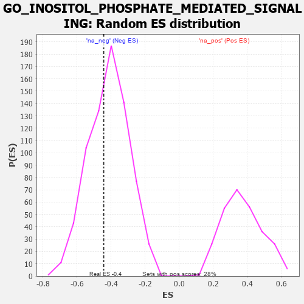

| | | Dataset | 7d |
| Phenotype | NoPhenotypeAvailable |
| Upregulated in class | na_neg |
| GeneSet | GO_INOSITOL_PHOSPHATE_MEDIATED_SIGNALING |
| Enrichment Score (ES) | -0.44414842 |
| Normalized Enrichment Score (NES) | -1.0694405 |
| Nominal p-value | 0.37707183 |
| FDR q-value | 0.7895498 |
| FWER p-Value | 1.0 |
Table: GSEA Results Summary
 Fig 1: Enrichment plot: GO_INOSITOL_PHOSPHATE_MEDIATED_SIGNALING
Fig 1: Enrichment plot: GO_INOSITOL_PHOSPHATE_MEDIATED_SIGNALING
Profile of the Running ES Score & Positions of GeneSet Members on the Rank Ordered List
| PROBE | GENE SYMBOL | GENE_TITLE | RANK IN GENE LIST | RANK METRIC SCORE | RUNNING ES | CORE ENRICHMENT | | 1 | PTBP1 | | | 1441 | 0.402 | -0.1095 | No |
| 2 | NFAT5 | | | 1856 | 0.326 | -0.1036 | No |
| 3 | CHP1 | | | 3089 | 0.138 | -0.2338 | No |
| 4 | CHERP | | | 3587 | 0.062 | -0.2852 | No |
| 5 | MTOR | | | 4114 | -0.025 | -0.3470 | No |
| 6 | PLCE1 | | | 4127 | -0.028 | -0.3435 | No |
| 7 | FHL2 | | | 4222 | -0.046 | -0.3472 | No |
| 8 | NMUR2 | | | 4646 | -0.127 | -0.3777 | No |
| 9 | ITPR1 | | | 4661 | -0.130 | -0.3563 | No |
| 10 | ITPR3 | | | 5361 | -0.288 | -0.3929 | Yes |
| 11 | EFHB | | | 5447 | -0.306 | -0.3491 | Yes |
| 12 | ACTN3 | | | 5486 | -0.315 | -0.2979 | Yes |
| 13 | DYRK2 | | | 6533 | -0.677 | -0.3088 | Yes |
| 14 | GSK3B | | | 6719 | -0.768 | -0.1953 | Yes |
| 15 | NMUR1 | | | 6821 | -0.828 | -0.0607 | Yes |
| 16 | CIB1 | | | 7280 | -1.152 | 0.0869 | Yes |
Table: GSEA details [plain text format]

Fig 2: GO_INOSITOL_PHOSPHATE_MEDIATED_SIGNALING: Random ES distribution
Gene set null distribution of ES for GO_INOSITOL_PHOSPHATE_MEDIATED_SIGNALING